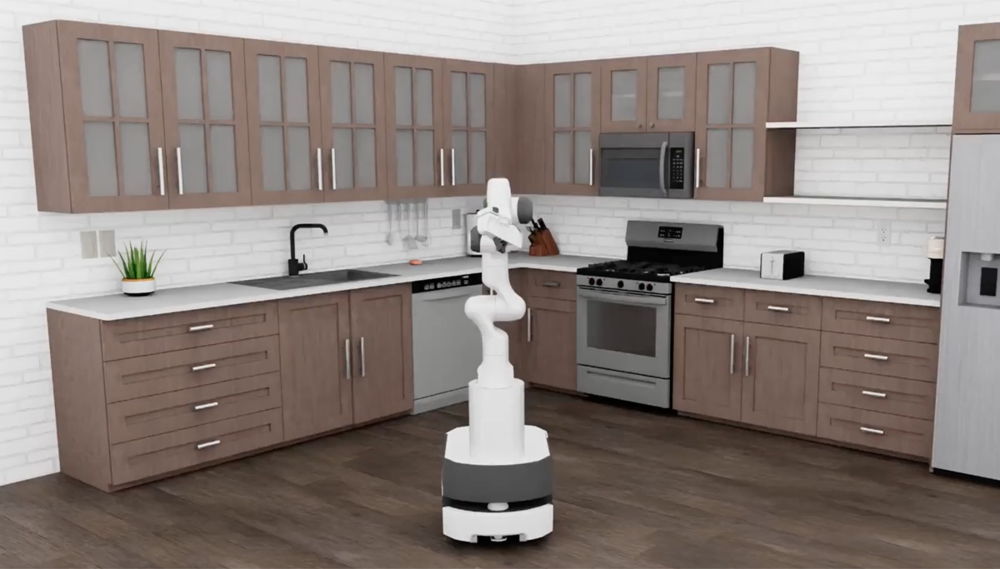
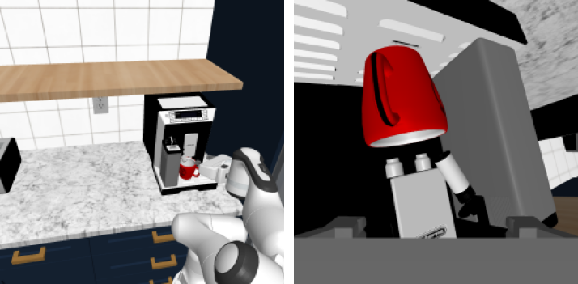
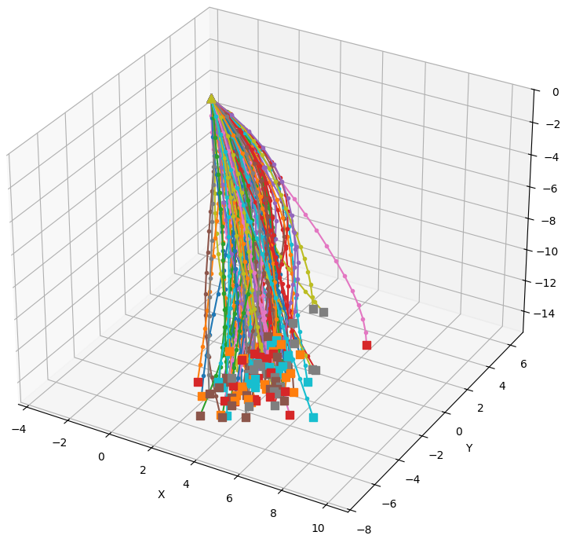
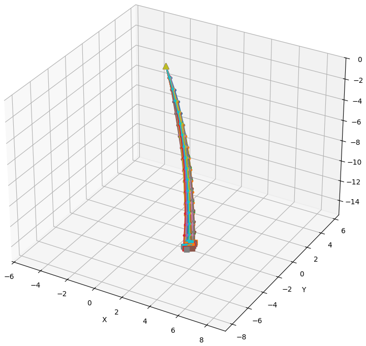
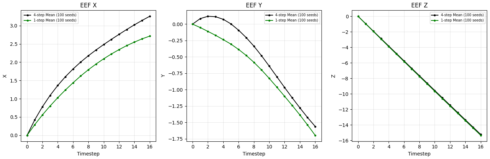
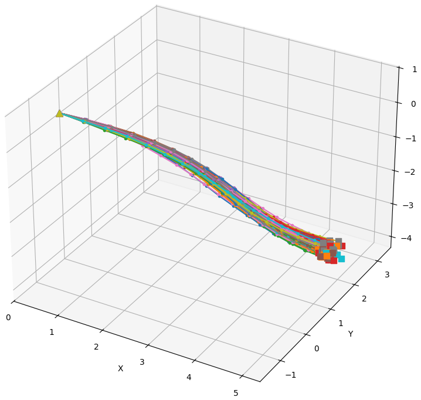

┌───────────────┬─ re-plan with new observations ───┐ │ ▼ ▼ │ 3 cameras + instruction state (16-d) │ │ │ │ ▼ ▼ │ ┌───────────────────────────┐ state encoder │ │ Eagle VLM (1.9B, frozen) │ │ 1 token │ │ SigLIP2 + Qwen3-1.7B │ │ │ └────────────┬──────────────┘ │ │ │ VL tokens (cross-attention) │ │ ▼ ▼ │ ┌─────────────────────────────────────────────────────┐ │ │ DiT action head (1.1B, 32 blocks, LoRA) │◄──┐ │ │ 51 tokens = 1 state + 50 action │ │ │ └──────────────────────────┬──────────────────────────┘ │ │ ▼ │ │ action decoder action encoder │ │ velocity v ▲ │ ▼ │ │ a ← a + v/n ─────────── a ───────────┘ │ │ a starts as noise; │ │ a is complete after n=4 steps │ ▼ │ action chunk: 16 steps × 12-d │ │ │ ▼ └──────── robosuite OSC controller: execute 8 steps
| Signal | Notes | |
|---|---|---|
| Cameras (3 × 256×256×3) | Left & right exocentric views (2 × 256×256×3); wrist egocentric view (256×256×3) | Rendered at 512×512, resized to 256×256 |
| State (16-d) | End-effector position (3-d) & quaternion (4-d) relative to the base; gripper finger positions (2-d); base position (3-d) & quaternion (4-d) | No joint angles or velocities |
| Language | "pick the mug from under the coffee machine dispenser and place it on the counter" | Fixed throughout episode |
| Action (16 × 12-d) | End-effector Δposition (3-d) & Δrotation (3-d, axis-angle); gripper open/close (1-d); base velocity (3-d) & torso height (1-d); arm/base mode (1-d) | Operational space control (OSC) deltas, not joint angles or torques |
to_q, to_k, to_v, to_out
and both feed-forward projections (6 modules).proj_out_1 (scale/shift of the final AdaLayerNorm) and proj_out_2
(projection into the action decoder).
═══════════════ ×32 BasicTransformerBlock ═══════════════
hidden_states [B, 51, 1536] ──────────────────┐ (skip)
│ │
▼ │
norm1 = AdaLayerNorm(1536) ◄── silu(temb) │
│ .linear 1536 → 3072 → scale, shift │
# │ ^ frozen, not a LoRA target │
│ .norm LayerNorm (no affine) │
▼ │
┌──────── SELF / CROSS ATTENTION ────────┐ │
+ │ attn1.to_q 1536 → 1536 │ │
+ │ attn1.to_k 1536* → 1536 │ │
+ │ attn1.to_v 1536* → 1536 │ │
+ │ attn1.to_out.0 1536 → 1536 │ │
# │ even: cross-attend VL tokens │ │
# │ (idx%4==0 text, idx%4==2 image) │ │
# │ odd: self-attend │ │
└────────────────────────────────────────┘ │
▼ │
(+) residual ◄───────────────────────────────┤ (skip)
▼ │
norm3 = LayerNorm(1536) │
┌───────── FEED FORWARD (GELU) ──────────┐ │
+ │ ff.net.0.proj 1536 → 6144 │ │
+ │ ff.net.2 6144 → 1536 │ │
└────────────────────────────────────────┘ │
▼ │
(+) residual ◄───────────────────────────────┘
═════════════════════════════════════════════════════════
# * 2048 → 1536 in cross-attention blocks
# 6 LoRA modules × 32 blocks = 192 modules
hidden_states [B, 51, 1536] (after 32 blocks)
│
▼
┌─── FINAL AdaLayerNorm (inline in DiT.forward) ───┐
│ norm_out = LayerNorm(1536, no affine) │
# │ │ the barrier: strips mean & scale, │
# │ │ so a block ΔW that only rescales │
# │ │ the residual stream is erased │
│ │ silu(temb) │
│ │ │ │
+ │ │ proj_out_1 1536 → 3072 │
│ │ │ │
│ │ .chunk(2) → shift, scale │
│ ▼ ▼ │
│ norm_out(h) · (1 + scale) + shift │
# │ gain + shift on all 51 output tokens │
└──────────────────────────────────────────────────┘
▼
+ proj_out_2 1536 → 1024 (output projection)
▼ [B, 51, 1024]
action_decoder (embodiment MLP, frozen)
▼ drop the state token
velocity v [B, 50, 128]





| Denoising strategy | Success, seeds 100–129 × 3 runs each |
|---|---|
| Baseline: one noise sample, 4 Euler steps | 48.9% |
| Chunk closest to the mean, 1 Euler step | 46.7% |
| Chunk closest to the mean, 4 Euler steps | 37.8% |